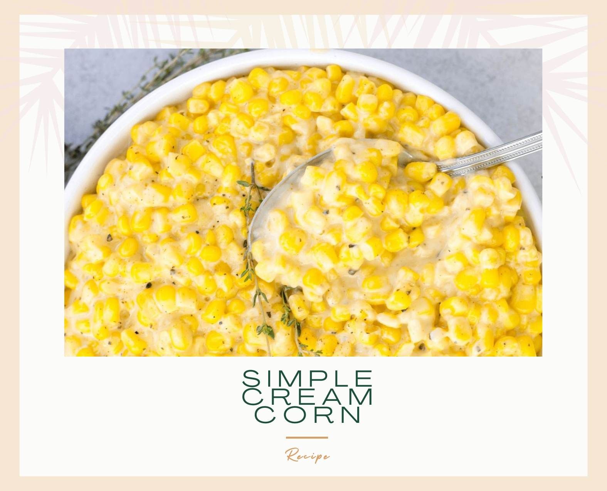

CORN: This recipe starts with two packages of thawed frozen corn kernels.
CREAM: Heavy whipping cream is the key to the creamy, decadent texture..
SUGAR: A tablespoon of white sugar adds a hint of sweetness.. SEASONINGS: This creamed corn recipe is simply seasoned with salt and pepper.. BUTTER: Butter adds richness and flavor... MILK: This recipe calls for whole milk, but you can use 2 percent milk if you'd prefer..FLOUR: All-purpose flour acts as a thickening agent, so you don't have to worry about runniness..
CHEESE: Parmesan cheese is the perfect finishing touch. For more cheesy flavor, sprinkle some more on top before serving...
.. 